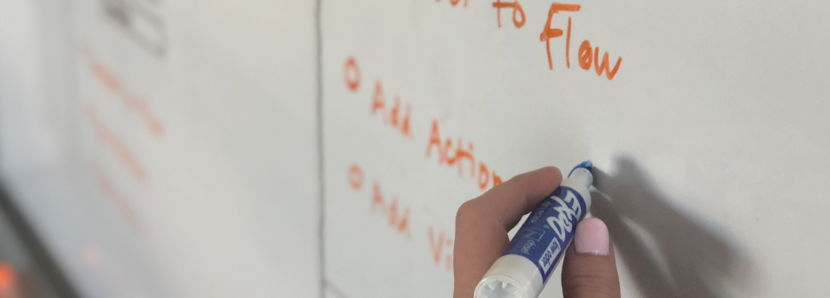

Botanic Author is an enterprise-level product that empowers users to develop and deploy multi-modal bots across multiple channels. I was the sole designer working through the full-cycle of product research, strategy and design.
Role
Product Designer & UX Researcher
Team
I collaborated with four developers
Deliverables
Research
User Flows
Wireframes
Mockups
Beta Testing
The Challenge
Botanic Author came out of desire to provide the building blocks for creating conversational interfaces to Botanic’s customers. With many competitors already in the space, we needed to create a tool that also differentiated in the market.
The Solution
A widely accessible tool that incorporates a visual, intuitive approach to building a bot that requires no knowledge of code in order to empower users to create their own conversational interfaces.
Process
Research
Initial research was conducted to gather a greater understanding of the market and potential competitors. Currently, there is a growing number of bot building tools. I explored their UI and UX and found:
• Competitors’ products tend to have shoddy usability and are overly complicated.
• Competitors tend to focus on chatbots and voice assistants, leaving open space for a tool that automates visual avatars.
User research was an interesting challenge. My number one point person was our content writer and strategist, who would be a direct, internal user for the tool. Working with him was an integral part of learning about best practices for writing for bots and tool feature requirements.

Strategy
Since writing bot content will inevitably be a new experience for most users, developing a clear product flow was crucial for usability. Our goal was to mirror the way bot content writers break out conversation while maintaining clear, visual paths through a system that often becomes unwieldy and complicated.
Ideation | Wireframes
Wireframing began with a series of paper sketches and whiteboarding in collaboration with the team. In order to heighten usability and develop an intuitive, plug and play tool, I focused primarily on:
• Nesting: The product has a ton of functionality, but a lot of the features are for rare (yet crucial) use cases. Nesting certain parts in order to provide default settings with the option of added granularity aided in designing an approachable and uncluttered workspace.
• Consistent modal interactions: Modals contain fields/options and are used throughout the product. The choice of a modal (over a separate page) was a way to keep interactions grounded in the main Workspace area while giving focus to specific interactions.
• Functional hover states: Another variation of nesting, many of the components in the tool have hover states that also expose the option to edit/delete. This is a learnable behavior that helps keep the workspace minimal, while also unlocking additional functionality just a click away.
(Currently, the wireframes are under NDA until official product launch)
Ideation | Mockups
Working on the wireframes was an incredibly iterative and collaborative process. Understanding technical limitations/capabilities as well as bot creation best practices and requirements was crucial to the success of the product development cycle and ultimate result. Visual design was used in the tool as a way to enhance the experience through:
• Consistency in visual language: Using a tight color scheme and repetitive visual elements (such as icons and button shapes), the entire product has a sense of polish and serves to avoid any distraction from the flow.
• Clear calls to action: The use of bright colors is sparse and used to clearly indicate actionable elements. Hover states on all clickable options were also important as way to give users immediate feedback on the state of an element.
I developed dozens of visual assets, including pixel-perfect mockups, design specifications and handcrafted icon files. I managed the front end development of these mockups and worked closely with backend developers to ensure proper and timely application.
(Currently, the mockups and other assets are under NDA until official product launch)
Beta Testing Program & Iteration
Botanic was able to secure a handful of potential customers interested in participating in our beta program. I managed the entire UX / UI research segment of the program.
Consisting of a round of usability testing and user interviews, we were able to gather valuable insights about the strengths and weaknesses of the product with a group of users that were very interested in creating their own bots. These insights were incredibly helpful in determining priorities in terms of product enhancements, feature requests and general design upgrades. Collaborating closely with the development team, iteration is ongoing.
Results
The initial wireframes I developed were used in a deck to successfully help secure investment for Botanic. This was a great opportunity for us and gave us the funding to continue to build out the product.
Personally, working through the full-cycle of product design was an awesome challenge. It reinforced the absolute necessity of an open, collaborative, and iterative team in creating successful and thoughtful products.
We’re currently iterating and working on ways to enhance the Author’s Tool even further and starting preparations for the official product launch.
.png)